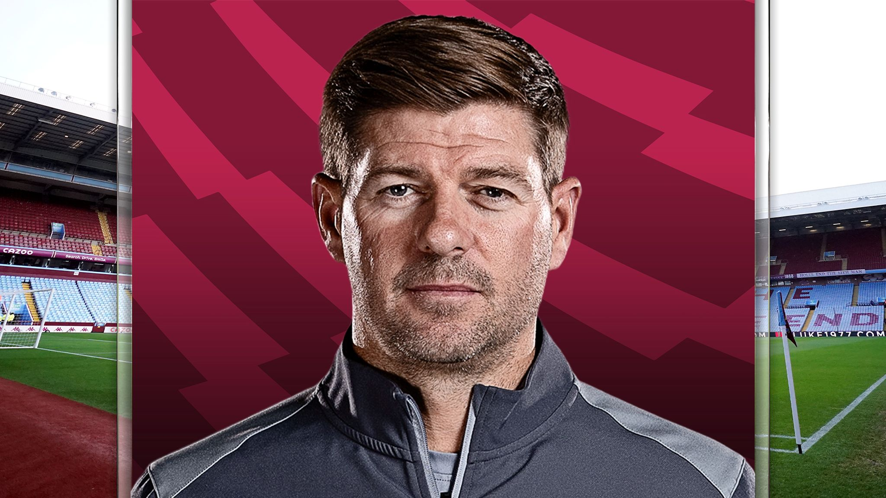

Futebol
Craques: Phil Foden, Walker, Pickford, Alexander-Arnold, Kane, Bellingham.
Melhores jogadores da história: Wayne Rooney, Steven Gerrard, David Beckham, Lampard.
Steven Gerrard

- Nome completo: Steven George Gerrard
- Data de nascimento: 30 de maio de 1980
- Local de nascimento: Whiston Reino
- Nacionalidade: inglês
- Altura: 1,83
- Apelido: Capitão Fantástico